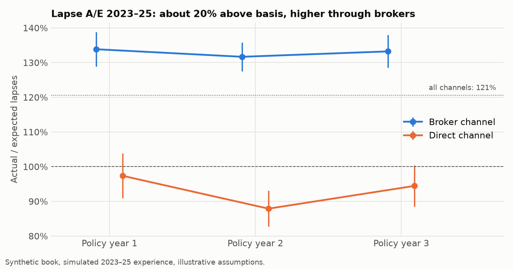
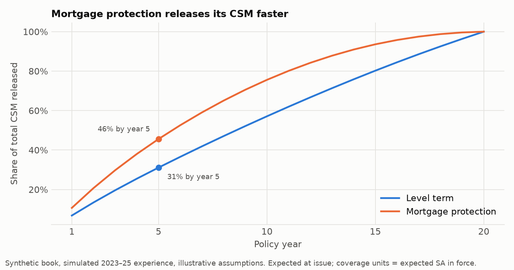
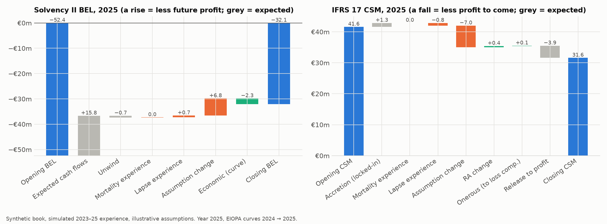
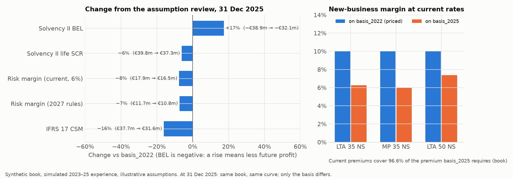

Pricing, experience analysis, Solvency II and IFRS 17 for a synthetic Irish term-assurance book · Technical note · Tom Zhang · 2026
Level term assurance (LTA) pays a fixed sum on death within 20 years. Mortgage protection (MP) pays the outstanding balance of a 20-year repayment mortgage at 4%, S_t = SA·(1 − v^(20−t)) / (1 − v^20); Irish law generally requires it on owner-occupied mortgages (Consumer Credit Act 1995, s.126). Neither has a surrender value.
| Feature | Setting | Feature | Setting |
|---|---|---|---|
| Policies | 50,000, issued 1 Jan 2023 | Products | LTA / MP 50% each, 20-year term |
| Issue age | 25–55 uniform | Sex / smoker | 55% male (anti-selected mix) / 20% smoker |
| Channel | broker 70%, direct 30% | Sum assured | LTA lognormal, median €250k (€50k–€1m); MP loan median €300k |
Timeline: priced at end-2022 on basis_2022; experience 2023–25 simulated; experience study and assumption review at 31 Dec 2025 produce basis_2025; valuations at issue and each year-end on the EIOPA curve of that date.
| Item | basis_2022 | basis_2025 | Status |
|---|---|---|---|
| Mortality | CMI 00 (TMN/TMS/TFN/TFS, 5-year select) × X, X = 0.98522.5 = 0.712 | × 1.040 | External table + documented improvement judgement (1.5% p.a. from 2000.5 to 2023); experience-credibility update |
| Lapse | 6, 9, 8, 7, 6% in years 1–5, 5% after, 0 in the last year | × 1.206 at all durations | Illustrative; judgement that the early excess persists |
| Expenses | acquisition €250; maintenance €60; overhead €15 (not IFRS-attributable); claim €250; inflation 2.5% | maintenance €63.60 | Illustrative; expense investigation |
| Commission / fee | 100% of first-year premium; policy fee €60 p.a. | Illustrative | |
| Pricing | earned 3%, RDR 8%, target margin 10%, unisex at 60% male | Illustrative; unisex required by law | |
| Reserving | mortality 110%, no lapses, 2.5%, zeroised | Prudent illustrative basis | |
| Truth (simulator only) | mortality 110%; lapse 120% × channel (broker 1.10, direct 0.767); maintenance 106% | Hidden from the study | |
Mortality level. The six quotes imply X ≈ 0.45, but even at that level the residual changes sign by age and smoker status (30 NS still 35% dear, 50 S 16% cheap). Retail premiums also carry commission, expense loadings, margins and newer reinsurer-backed mortality, so they cannot identify mortality alone; they are used as a reasonableness check (model 1.26–1.58 × market mid).
Annual steps. In policy year t: premium, commission and expenses at t; death (probability q_t) paid with claim expense at t+1; survivors lapse (w_t) at t+1. In-force ℓ_{t+1} = ℓ_t(1 − q_t)(1 − w_t). The value of one policy in force at t, positive = liability:
One backward pass gives V at every duration, which Solvency II needs for SCR run-off and IFRS 17 for later valuations. The whole book (50,000 × 20) is valued in about 0.02 s with numpy.
Reserves are prospective on the reserving basis, floored at zero. Profit vector and margin:
Pr_t = (_tV + P − comm_t − exp_t)(1 + i) − q_t(S_t + CE_t) − (1 − q_t)(1 − w_t) _{t+1}V Π_t = ℓ_t Pr_t margin = Σ Π_t (1+RDR)^−(t+1) / Σ ℓ_t P (1+RDR)^−tUnisex rates. Since 21 Dec 2012 EU insurers may not price by sex (CJEU C-236/09). For each cell (product × smoker × age) the rate solves a pooled margin of 10%: [m·NPV_M + (1−m)·NPV_F] / [m·EPV_M + (1−m)·EPV_F], m = 60% male. Premium = rate × SA/1000 + €60.
Each policy-year draws death then lapse from the truth basis. The study sees only the data and basis_2022: A/E by count, amount and lapse across nine cuts; 95% intervals A/E ± 1.96√A/E (amount basis uses Σ q(1−q)S²); limited-fluctuation credibility Z = min(1, √(A/1082.41)); new multiplier old × (1 + Z(A/E − 1)).
BEL = Σ V on the EIOPA curve (no VA), full expenses. Per-policy stresses at every future time, floored at 0: mortality ×1.15; lapse up ×1.5 (only where V < 0), down −min(50%, 20pp) (only where V > 0), mass 40% of −V; expenses ×1.10 and inflation +1pp; catastrophe +0.0015 for 12 months. SCR_life(j) = √(xᵀCx) with the Art. 136 correlations. Risk margin:
RM_current = 6% Σ SCR(j) DF(j+1) RM_2027 = 4.75% Σ max(0.96^j, 0.5) SCR(j) DF(j+1) RM_2027 / RM_current = (19/24) Σ π_j max(0.96^j, 0.5), π_j ∝ SCR(j) DF(j+1) ⇒ ratio ∈ [0.396, 0.792]Each year changes one thing at a time and revalues: S0 opening → S1 expected roll-forward (identity S1 = (S0 − X)/v − EC) → S2 actual deaths → S3 actual lapses → S4 new assumptions → S5 year-end curve. The same steps run for Solvency II BEL (with overhead), IFRS 17 BE (without) at current and at locked-in rates, the RA at four points, and the CSM.
| Unisex rate per €1,000 | Age 25 | 35 | 45 | 55 |
|---|---|---|---|---|
| LTA non-smoker / smoker | 0.72 / 0.94 | 1.04 / 1.69 | 2.22 / 4.49 | 6.15 / 12.94 |
| MP non-smoker / smoker | 0.54 / 0.68 | 0.71 / 1.00 | 1.24 / 2.31 | 3.12 / 6.69 |
| Margin at the priced premium | Base | Mort +10% | Lapse +20% | Lapse −20% | Exp +10% | Earned −1pp | RDR +2pp |
|---|---|---|---|---|---|---|---|
| LTA 35 NS | 10.0% | 6.7% | 9.8% | 10.1% | 6.4% | 9.0% | 8.8% |
| LTA 50 NS | 10.0% | 5.3% | 11.4% | 8.4% | 8.8% | 6.9% | 7.6% |
| MP 35 NS | 10.0% | 7.1% | 8.7% | 11.3% | 5.7% | 9.6% | 8.1% |
Lapses cut in both directions: they destroy future profit on MP, but on LTA at 50 higher lapses raise the margin, because late durations are loss-making and reserves are released on lapse. LTA reserves are hump-shaped (peak ≈ €860 at year 14 for the reference life); MP reserves are zero throughout.


The study recovers the lapse truth (A/E 121% against 120%) and points in the right direction on mortality (115% against 110%) but can adopt only a quarter of it. The unrecognised excess reappears as claims experience losses (€1.6m in each of 2024 and 2025). At 25–35 deaths a year, full credibility would take decades — why insurers use reinsurer and industry data.
| At issue, €m | BEL | Life SCR | RM current | RM 2027 | Cut | Own funds current → 2027 |
|---|---|---|---|---|---|---|
| Level term | −31.5 | 28.1 | 16.0 | 10.0 | 37.5% | 15.5 → 21.5 |
| Mortgage protection | −17.8 | 21.6 | 10.4 | 6.7 | 35.2% | 7.4 → 11.1 |
| Total | −49.3 | 49.4 | 25.6 | 16.3 | 36.3% | 23.7 → 33.0 |

The BEL is negative: expected premiums exceed claims and costs, so Solvency II recognises the future profit at once — which is exactly what a mass lapse would destroy. SCR peaks in year 1 because acquisition costs are then sunk and the profit at risk is largest. Mortgage protection gains less from the reform because its SCR runs off faster and the reform discounts distant capital most.
| Initial recognition, €m | Policies | BE | RA 75% | CSM | Loss comp. |
|---|---|---|---|---|---|
| LTA-G2 / G3 / G1 | 23,035 / 1,254 / 933 | −35.53 / −0.14 / −0.01 | 3.81 / 0.06 / 0.03 | 31.71 / 0.08 / 0 | 0 / 0 / 0.02 |
| MP-G2 / G3 / G1 | 23,781 / 407 / 590 | −21.89 / −0.08 / −0.01 | 2.92 / 0.03 / 0.02 | 18.97 / 0.05 / 0 | 0 / 0 / 0.02 |
| Total | 50,000 | −57.65 | 6.88 | 50.81 | 0.04 |

RA at 65 / 75 / 85%: €3.9m / €6.9m / €10.8m. A 6% cost-of-capital RA would be €26.6m — beyond every simulated scenario — because the SCR includes mass lapse and catastrophe and charges 99.5% capital every year, while the Monte Carlo covers only level uncertainty. The choice of method alone changes the RA about fourfold.
Premiums would have to fall 19% before the profitable groups had no CSM left.

| €m | 2023 | 2024 | 2025 |
|---|---|---|---|
| SII BEL: lapse experience | +1.15 | +1.02 | +0.72 |
| SII BEL: assumption change / economic | 0 / −0.06 | 0 / +0.36 | +6.76 / −2.30 |
| CSM: lapse experience / assumption change | −1.27 / 0 | −1.15 / 0 | −0.85 / −6.99 |
| CSM release / closing CSM | 5.27 / 46.02 | 4.95 / 41.61 | 3.93 / 31.59 |
| Claims actual − expected (P&L) | −1.24 | +1.58 | +1.61 |
| Insurance service result | 6.33 | 3.41 | 2.61 |

The review hurts value (BEL +17%, CSM −16%) but lowers SCR (−6%) and risk margin (−8%): higher lapses and costs leave less future profit to lose in a mass lapse. Current rates now earn 6.0–7.4% on new business; the 2026 rate table rises 2.0–6.9% for level term and 3.9–8.4% for mortgage protection.
Limitations. Synthetic book; CMI 00 is UK insured-lives experience from 1999–2002 with a judgement-based level; illustrative lapse, expense and commission assumptions; annual steps; life-underwriting SCR only (no assets, market, counterparty or operational risk, no tax); Monte Carlo RA covers level uncertainty only and group RAs are summed; IFRS 17 measurement and CSM roll-forward only (no revenue presentation or loss-component allocation); one cohort; simulated experience.
Next steps. Use reinsurer or industry data (e.g. SOA ILEC relativities) to strengthen the mortality basis; model lapse by channel with commission clawback; add assets and market risk for a full solvency ratio; extend to a savings or participating product (variable fee approach, options and guarantees); a Hong Kong RBC comparison.
Code, tests and build specification: github.com/pnlync/assurance. Sources: CMI 00 series (IFoA); CSO Irish Life Tables No. 17; EIOPA risk-free rate term structures; Commission Delegated Regulation (EU) 2015/35 Arts. 136–143; Delegated Regulation (EU) 2026/269 (risk margin, from 30 Jan 2027); IFRS 17 paras 14–20, 38, 44, 81, B119; CJEU C-236/09 Test-Achats; Consumer Credit Act 1995 s.126.